// data mining final project
Education is one of the most consistent predictors of an individual's later-life outcomes — and, in aggregate, of a country's ability to compete in a global economy. The OECD's Programme for International Student Assessment (PISA) tests the math, reading, and science skills of 15-year-olds every three years; the 2022 round, with a specific focus on mathematics, covered 613,744 students across 81 countries.
This project rolled that student-level data up to the country level and joined it with World Bank GDP and education-spending data to investigate three aims:
The short version: reading proficiency is a very strong predictor of math performance; socioeconomic status and food insecurity consistently out-predicted both geographic region and how much a country spends on education (as a percent of GDP); and models across the board did well distinguishing the extremes but struggled to separate the "meets minimum but nothing more" middle tier of countries from the rest.
Data came from four sources: PISA 2022 student testing and socioeconomic-status (SES) results (OECD, via a signed data-use agreement), GDP per capita by country (World Bank, via Our World in Data), and government education expenditure as a percent of GDP (UNESCO / World Bank).
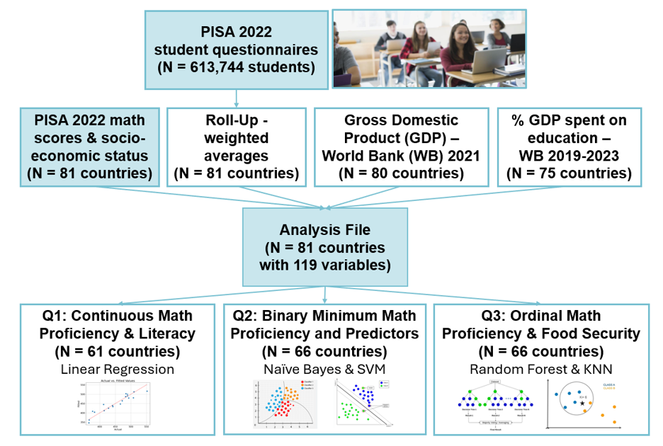
Missing values were imputed with the median where rare, and countries were excluded from a given analysis where data was more broadly missing — for example, 15 countries didn't include the food-security questions in their student questionnaire, so they were dropped from any analysis involving that variable. Country names were standardized across sources, and dimensionality was reduced primarily by rolling up student-level responses (n = 613,744) to country-level weighted averages (n = 81), using each student's trimmed, non-response-adjusted survey weight.
A Shapiro-Wilk test on the normalized average math scores came back non-normal (p = 0.027) — visible in the QQ-plot below — which was factored into model selection downstream.
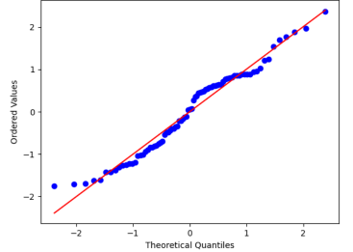
Average math scores across countries ranged from 336 to 575 (mean 437.65, SD 58.19). Math, reading, and science scores were all highly correlated with each other (r > 0.9). GDP and SES were both strongly correlated with achievement scores (r = 0.7), while a lack of grit and a lack of empathy were negatively correlated with achievement, and never (or almost never) going hungry was moderately positively correlated with achievement (r ≈ 0.6).
The question: does a country's average reading proficiency — plus a set of behavioral variables — predict its average math proficiency? Plotting reading against math by country showed a clear, strong, positive linear relationship, which made linear regression a natural fit.
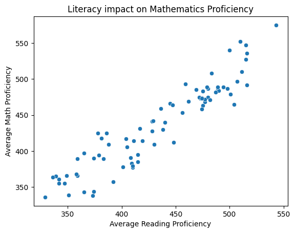
A model using reading performance alone already performed well (R² = 0.848).
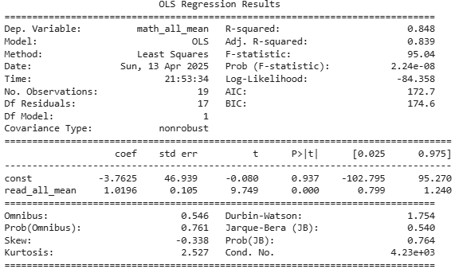
Adding every available behavioral variable (each broken into 5–8 sub-variable proportions) produced 17 independent variables — far too many for the sample size, leaving the model with only 1 residual degree of freedom and making it badly overfit. That model had to be discarded.
Instead, each behavioral variable was collapsed into a single aggregate (e.g. "percent of students reporting a high love of learning"), and a subset regression tested every combination of the resulting 7 variables against RSS, adjusted R², AIC, and BIC.
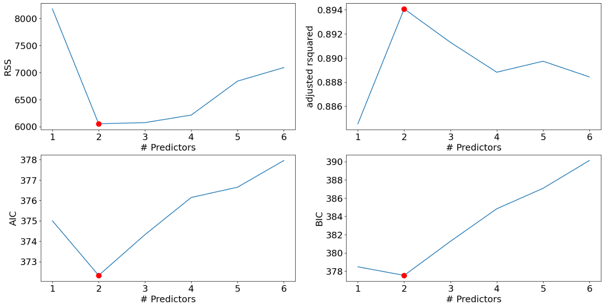
The best model used reading proficiency plus the aggregate "high love of learning" variable (R² = 0.899, adjusted R² = 0.894) — a meaningful, if modest, improvement over reading alone.
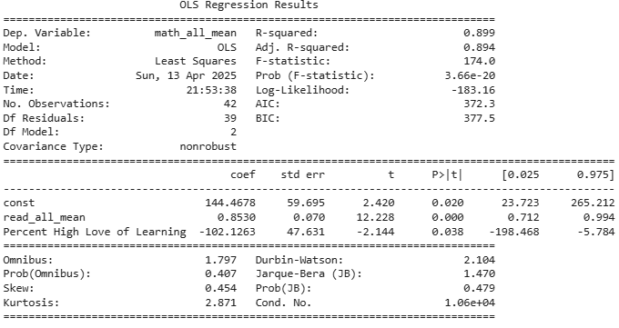
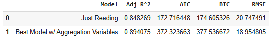
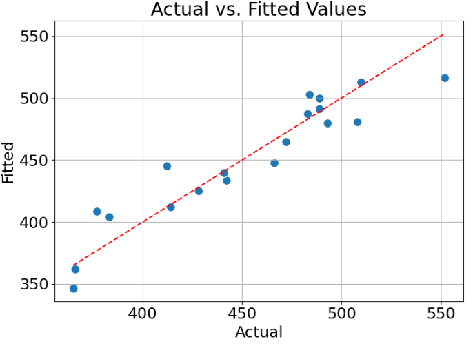
61 of the original 81 countries had complete data for this analysis after countries with missing values were dropped — a reasonable sample for a 2-parameter model, if not enough for the earlier 17-parameter one.
PISA's minimum math proficiency standard (Sustainable Development Goal 4.1.1) corresponds to a score of 420.07 or higher. This aim treated that as a binary outcome — meets vs. doesn't meet — and asked which factors predict it: SES, percent of GDP spent on education, geographic region, and food insecurity.
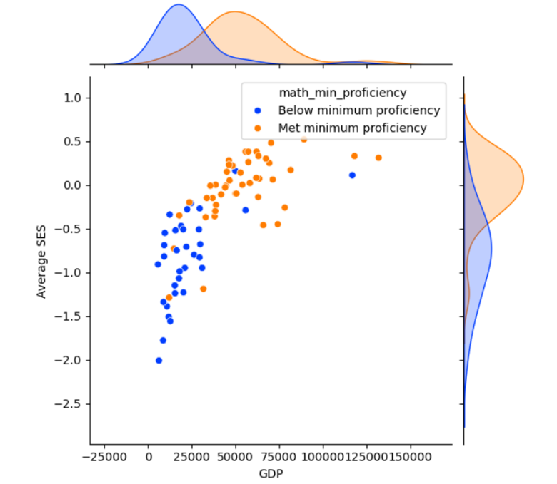
Continuous features were standardized before modeling:
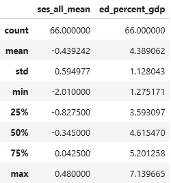
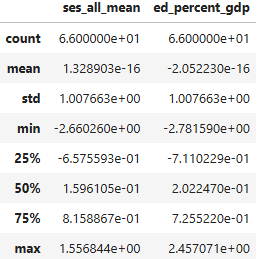
Both models were tuned with GridSearchCV. Gaussian Naive Bayes has one real hyperparameter,
var_smoothing; values from the default (1e-9) up through 1e-4 were tested, and the default
proved best. For SVM, three hyperparameters were tuned: C (0.1–100, best at 0.1, i.e. a
soft margin), kernel (linear, polynomial, and RBF tested; RBF won), and gamma
(best at "scale").
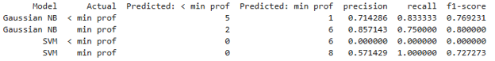
Even after tuning, SVM badly overpredicted the "meets minimum" class — to the point that it never classified a single test-set country as below minimum proficiency. Gaussian Naive Bayes handled both classes reasonably well, with accuracy, precision, recall, and F1 all at or above 71%.
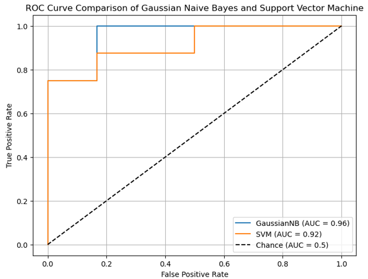
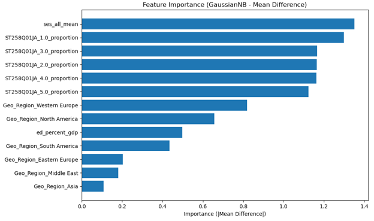
This aim split countries into three tiers — below minimum proficiency (<420.07), meets minimum (420.07–482.38), and exceeds minimum (482.38+) — and asked how food insecurity, SES, and GDP relate to that tier. The food-insecurity measure was the weighted proportion of students per country who reported not eating, due to lack of money, two or more times in the last 30 days.
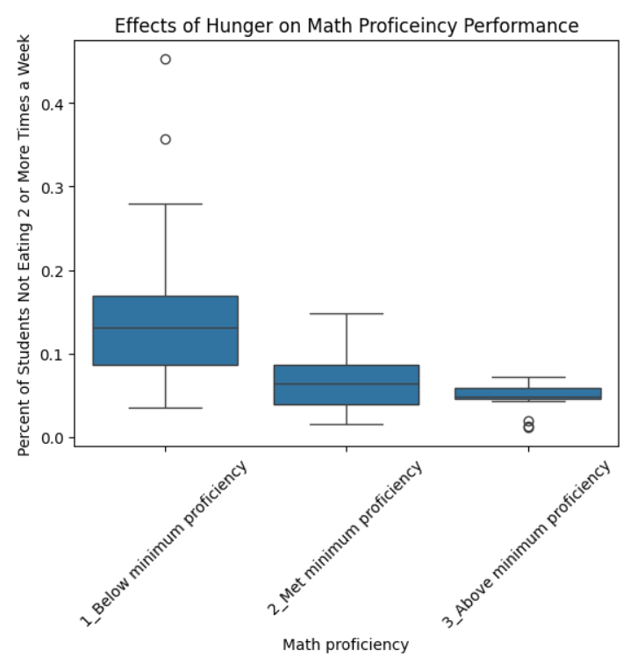
Random Forest was tuned over n_estimators (300, 400, 500) and max_depth (2, 3, 5,
8), with balanced class weights to offset the class imbalance; the best model used 300 estimators and a max
depth of 2. KNN was tuned over n_neighbors (2–5) and distance metric (Euclidean, Manhattan,
max, Minkowski); the best model used 2 neighbors and the Euclidean metric. Region was dropped as
uninformative for both models, and KNN in particular performed better once narrowed to just SES, GDP, and
food security.
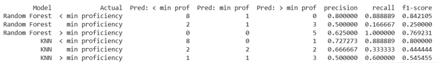
Random Forest outperformed KNN at both extremes — below minimum (precision 0.80, recall 0.89, F1 0.84 vs. KNN's 0.72 / 0.89 / 0.80) and above minimum (precision 0.65, recall 1.00, F1 0.77 vs. KNN's 0.50 / 0.60 / 0.54). Neither model, however, classified the middle "meets minimum" tier better than chance would.
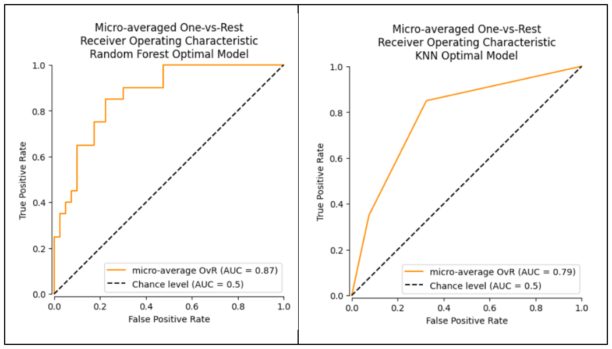
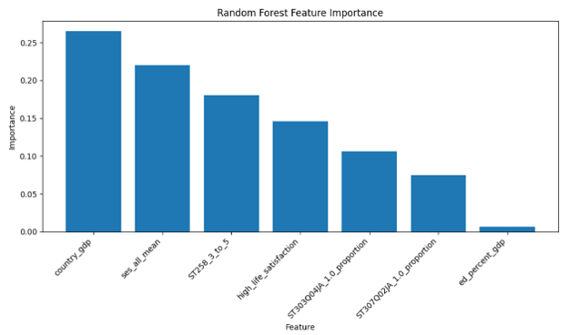
Reading and math proficiency are, unsurprisingly, tightly linked — but a country's subjective "love of learning" adds real (if modest) predictive value on top of raw literacy. More strikingly, the same handful of socioeconomic factors kept surfacing as the strongest predictors across every model type tried: average SES, national GDP, and food insecurity consistently outranked both geographic region and the specific behavioral variables (growth mindset, grit, empathy) included in the models.
The most counterintuitive finding: how much of its GDP a country spends on education was still a statistically significant predictor everywhere it was included — but it was never one of the most important predictors. Basic economic stability and food security outranked education spending itself. That's a genuinely interesting result for education policy, and it's the kind of thing that warrants more granular follow-up (how money is spent, not just how much).
A consistent limitation across all three aims: PISA's own scoring methodology (how raw responses become a proficiency score) isn't fully transparent, which meant relying on country-level aggregates rather than the much richer student-level data actually available. All three models also struggled specifically with countries in the "meets minimum, but nothing more" middle tier — suggesting the factors that separate strong and weak performers may not be the same factors that separate merely-adequate performers from either end.
Proposed future work: use unsupervised learning to build student-level proficiency clusters (rather than country-level aggregates) as a first pass, then re-run this same style of analysis at that more granular level — combined with more detailed data on how, not just how much, countries spend on education.
This was a 3-person team project. The notebooks below cover data preparation and all three aims; each was individually checked to confirm it works only from the pre-aggregated, 81-country dataset before being published here (see the note below).
A note on data access: the underlying PISA 2022 student-level microdata (613,744 records) is only available after completing OECD's data-use agreement, which restricts redistribution of the raw file. It isn't included here. One notebook from the original project — which loaded and previewed that raw student-level file directly — was deliberately left out of this page rather than published with its outputs stripped, since its content is already fully covered by the data-preparation notebook above. Every notebook published here was individually checked to confirm its saved outputs contain only aggregate, country-level statistics, consistent with what the team's own report and poster present.